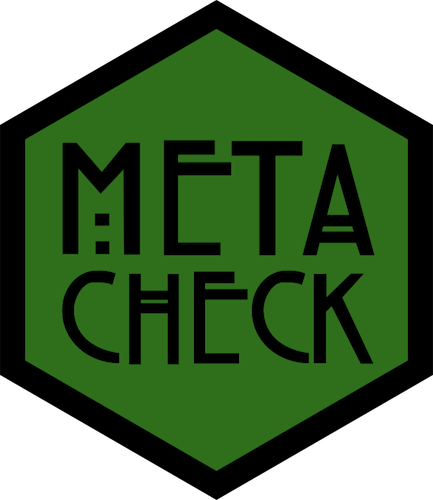

Two-sample t test power calculation
n = 81.65515
d = 0.5
sig.level = 0.01
power = 0.8
alternative = greater
NOTE: n is number in *each* groupCristian Mesquida
Studies designed with high power are more informative:
Higher probability of detecting the effect size of interest when it exists (i.e., higher true positive rate)
A non-significant result is more informative because it is less likely to be due to insufficient power. For example, a non-significant result from a study designed with 90% power is more informative than one from a study designed with 50% power
A Priori: calculates the required sample size to achieve a pre-specified power given a pre-specified effect size
Sensitivity (Effect Size): calculates the smallest effect size required to detect a pre-specified sample size with a pre-specified power
Sensitivity (Power): calculates power given a pre-specified effect size and sample size
Post Hoc: calculates the power associated with the observed effect size and the sample size actually obtained
How would you write up this power analysis?
We conducted an a priori analysis to determine the sample size with 80% power to detect the smallest effect size of interest (SESOI), which was a Cohen’s d of 0.5 determined by a cost-benefit analysis of the intervention. We used the pwr package (Champely, 2020) for an independent samples t-test, assuming equal variance and using a one-tailed prediction, with a critical alpha of 0.01. This determined that we would need 82 subjects in each group.
A sample size of 22 participants was predetermined to yield a power of 80% and to detect an effect of comparable size to previous studies using similar independent and dependent measures (CITE).
We decided to obtain a sample size that would allow us to detect a within-subjects difference of at least a medium effect size with 80% power, using a two-tailed t-test. A power analysis using G*Power (Version 3.1.9.3; Faul et al., 2007) indicated that this required a sample size of 34.
stat_effect_size, stat_p_nonsig, marginal, power, etc.repo_check, code_check, data_check, etc.The power module can help researchers report all components of a power analysis.
It detects the type of power analysis using regular expressions (i.e., regex) only
An LLM is used to identify and extract the reported components of the power analysis
power_type | statistical_test | sample_size | alpha_level | power | effect_size | effect_size_metric | software |
|---|---|---|---|---|---|---|---|
apriori | unpaired t-test | 36 | 0.05 | 0.8 | 0.5 | Cohen's d | G*Power Version 3.1.9.2 |
[…], we used a conservative effect size (d) of 0.5, an alpha of .05, and power of .8 for our sample-size computation (G*Power Version 3.1.9.2; Faul et al., 2007). The estimated sample size was 34 participants, but we used 36 […], which yielded a power estimate of .83.
power_type | statistical_test | sample_size | alpha_level | power | effect_size | effect_size_metric | software |
|---|---|---|---|---|---|---|---|
apriori | unpaired t-test | 48 | 0.004 | 0.86 | 0.6 | Cohen's d | G*Power |
[…], we used a medium effect size (d) of 0.6, an alpha of .004 (Bonferroni corrected for the current study), and power of .8 for our sample-size computation (G*Power Version 3.1.9.2; Faul et al., 2007). The estimated sample size was 33 participants, but to fit the counterbalancing, we recruited 48, which yielded a power estimate of .86.
Even LLMs struggle to identify information with inconsisting reporting
Two groups of 48 participants […].
Sample size was determined using […].
A two-level factor manipulating fixation placement was added to create a 2 (initial fixation position: background, foreground) × 2 (presentation duration) × 2 (scene type: normal, chimera) × 3 (target condition: foreground, background, inconsistent control) within-subjects design.
Only 11% of 1295 power analyses from 1937 Psychological Science papers published between 2014 and 2026 have complete reporting.
| Component | Percent Missing |
|---|---|
| power type | 0% |
| power | 15% |
| sample size | 19% |
| effect size | 32% |
| effect size metric | 28% |
| statistical test | 22% |
| alpha | 67% |
| software | 71% |
Preliminary analysis using Metacheck, from Mesquida, Lakens & DeBruine (in prep).
{
"$schema": "https://json-schema.org/draft/2020-12/schema",
"$id": "https://scienceverse.org/schema/power.json",
"title": "Power Analyses",
"description": "A power analysis.",
"type": "object",
"properties": {
"text": {
"description": "The specific text that contains all of the information used to determine this object's properties.",
"type": ["string", "null"]
},
"power_type": {
"description": " ... ",
"type": ["string", "null"],
"enum": ["apriori", "sensitivity", "posthoc", null]
},
"statistical_test": {
"description": "The statistical test used. Use null if unclear.",
"type": ["string", "null"],
"enum": [
"paired t-test",
"unpaired t-test",
"one-sample t-test",
"1-way ANOVA",
"2-way ANOVA",
...
"other",
null
]
...
}| Component | Agree | Accuracy |
|---|---|---|
| power type | 165 | 80% |
| statistical test | 159 | 77% |
| sample size | 173 | 84% |
| alpha | 201 | 97% |
| power | 194 | 94% |
| effect size metric | 193 | 93% |
| effect size | 189 | 91% |
| software | 192 | 93% |
Interested in developing new modules?
Get in touch: c.mesquida.caldentey@tue.nl
https://github.com/scienceverse/talks/tree/main/2026-forrt-ai-conf
